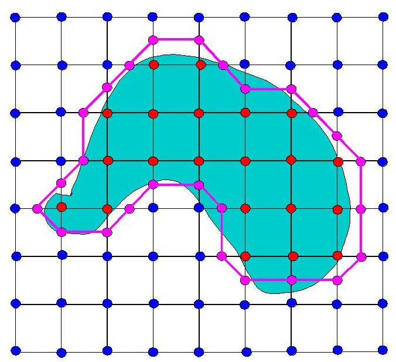

Fluid Simulation and Melting
Ty Trusty
Project Description
For my final project my goal was to explore fluid simulation and learn how a melting effect could be achieved. After some research, I came across the paper Melting and Flowing [Carlson et al. 2002] which describes how you can simulate melting by representing solids as highly viscous liquids and then varying viscosity due to change in temperature.
Source Code
melting.tar.gzBackground
-
Navier-Stokes
The Navier-Stokes equations are used to describe the motion of fluids. They are a direct application of Newton's Second Law to fluids. The two equations for Navier-Strokes are:
First Equation:

This equation describes the change in velocity vector over time (acceleration). For this reason, it's usually called the momentum equation. The four terms on the right side are a combination of accelerations, three of which being differential equations that we must solve. These four terms (from left to right) are advection, pressure, diffusion, and external forces.
-
Advection: describes how some quantity is transported along a vector field. For example, in the case of smoke we are advecting a density along the velocity vectory field.
-
Pressure: Pressure creates acceleration as high pressure areas "squish" against low pressure regions. The pressure at a given point is essentially a net combination of its surrounding pressures. The difference of pressures creates an imbalance which causes acceleration. And then to measure the pressure imbalances we use the negative gradient, which you can see in the pressure component.
-
Diffusion
 : The diffusion term is effectively the fluid's viscosity. The v in the equation is a scalar that influences how much the fluid will resist changes. A high v indicates high viscosity and vice versa. The remaining bit of the diffusion term makes use of the Laplacian operator. The Laplacian operator tells you how a value at a point differs from the average of the surrounding points, which can be interpreted as the acceleration due to stress applied by neighboring values.
: The diffusion term is effectively the fluid's viscosity. The v in the equation is a scalar that influences how much the fluid will resist changes. A high v indicates high viscosity and vice versa. The remaining bit of the diffusion term makes use of the Laplacian operator. The Laplacian operator tells you how a value at a point differs from the average of the surrounding points, which can be interpreted as the acceleration due to stress applied by neighboring values. -
External Forces F : In my simulation, these are forces from gravity or user input.
Second Equation:
The second equation describes the incompressibility condition of the fluid. Examining the equation, it states that the divergence of the velocity vector is zero. In other words, the density of the fluid is constant. The purpose of this equation is to ensure that our fluid abides by the conservation of mass. Also, the reason we state that the fluid is incompressible is because it simplifies the math (don't need to solve entire continuity equation) while still providing an accurate approximation. In reality all fluids are compressible, but they're typically only compressed under extreme conditions (e.g. sonic booms).
-
-
Level Set
A level set is the set of values for which some function equals a given constant c. For example if you had the equation x2 + y2 = 25 the level set would be all the x,y pairs that satisfy the equation. In this specific example that describes a circle with radius of 5, the level set would be all the points along the circle's boundary. You may see how level sets can be used to implicitly define surfaces.
-
Marching Cubes
Marching Cubes is an algorithm to extract a mesh from a scalar field. For the purposes of my fluid simulation, the algorithm is used to create the solid's surface from the signed distance field. How the algorithm works is you first divide an object into a grid of cubes. At each cube, you test its corners to see if they're in the object. If part of a cube's corner is inside the object and the other part is outside, then we know that the object's surface passes through the cube. With this information, we can draw the surface of an object by forming lines between all points where the surface interesects the cubes. Basic Marching Cubes results may look something like this:

simplifies to by assuming that density is constant
Results
Part 1: Basic Fluid Simulation
As mentioned in the description, you can model a solid melting by representing it as a highly viscous solid. A preliminary step for this process is creating a simulation for fluid flow, otherwise the solid wouldn't move like a liquid when it melts. So for this step the bulk of the work was solving the Navier-Stokes equation. To put it shortly, this basically involved solving advection, diffusion, and pressure using numerical integration (Gauss-Seidel method) and then applying external forces (gravity and/or user input). On top of this I had to handle boundary conditions (will discuss later) and ensure that the incompressibility condition is maintained on each step of the simulation.
When creating a fluid simulation, an important decision is whether to model motion with a Langrangian or Eulerian approach. In a Langrangian simulation, fluid is modeled through particles where the path of each particle must be traced individually. This is quite expensive and creates challenges due to the need to handle collisions. For my purposes, I chose a Eulerian approach due to ease of implementation. In the Eulerian approach, you instead have a vector field and measure changes at each point in the field. Here's a good quote that describes the differences with an analogy:
"One way to think of the two viewpoints is in doing a weather report. In the Lagrangian viewpoint you’re in a balloon floating along with the wind, measuring the pressure and temperature and humidity etc. of the air that’s flowing alongside you. In the Eulerian viewpoint you’re stuck on the ground, measuring the pressure and temperature and humidity etc. of the air that’s flowing past." FLUID Simulation SIGGRAPH 2007 Course Notes, Bridson, Muller-Fischer
And here's an image to further hammer the point down:
Once I created the basic fluid simulation, I rendered the velocity field. Here are the results for this step:
Part 2: Making Smoke
Creating smoke wasn't necessarily required to reach my goals, but I consider it a good milestone (also it looks really cool). By simulating smoke, I received assurance that my fluid sim was mostly correct. To create smoke, all I had to do was create some density field and advect the densities along the velocity field. Then to render the smoke, I use the density values as the alpha term in my fragment shader. Results:Part 3: Creating a Surface
After implementing smoke, the next step was to enforce a boundary around my fluid. Prior to this I attempted to create a melting effect on the density field (tried to melt the smoke), but I was unable to get good results. There are numerous papers describing different methods on how to represent a fluid's surface, but my goal for this project was to use the most basic method. The most popular method seems to be a Lagrangian method where particles define the surface, but I instead chose a Eulerian surface tracker simply because this allowed me to reuse much of my code from part 1. The method I use is a level set method that uses a signed distance function to track the surface. For each cell in the simulation grid, I store a signed distance value. The sign of the distance for a given cell indicates whether the cell is inside or outside the fluid. The (absolute) value of the signed distance describes the distance from a cell to the closest point on the surface. This method is illustrated in the image below:
As you can see, there is no need to explicity keep track of the fluid'ss surface. We know if a cell is inside the fluid if its distance is negative and outside if it's positive. Furthermore, we know if the surface lies between two cells if their signs differ. With these facts, we have all the information needed to create the liquid/solid surface. Then to render the fluid, I use a basic Marching Cubes algorithm (described in the Background section). To generate a smooth surface I interpolate the distance between cells. There are many optimizations for the Marching Cubes algorithm, but for my project a basic version was satisfactory.
The last part of this step was adding surface deformation. This was surprisingly easy and all I had to do was advect the signed distances along the velocity field. The results for this part are shown in the following video:
Part 4: "Melting"
To simulate temperature change, I created a simple heat boundary that expands in a uniform radius over time. At each cell in the simulation, I store an initial viscosity value. Then for each time step, if a given cell is within the heat boundary its viscosity is decreased by some constant. The viscosity value represent the kinematic viscosity value v used in the diffusion component () of the Navier-Stokes equation. Therefore as the viscosity lowers, the velocity at that cell will be allowed to diffuse more, and thus causing the solid to eventually flow like a liquid. The correct approach would be to solve the heat equation, and this would not have been a big challenge (very similar to Navier-Stokes equation 1), but I never found the time to implement this. The results of my technique can be seen in the video below.
Challenges
Besides the ordinary physics and OpenGL errors, I had some other issues that I consider noteworthy
The main issue that remains unsolved is volume loss. I initially believed this to a result of incorrect boundary conditions, so I spent a large amount of time tinkering with different conditions. My first attempt was based off of an intuitive understanding of liquids in a box. When a liquid moves horizontally towards a wall, the horizontal velocity is reversed (from hitting the wall) and the vertical velocity remains unchanged (so that it can move up the wall). My next attempt involved always reversing velocities, but this didn't resolve the issue. And then the result that appeared most correct was setting 0 velocity at the boundaries. However, volume loss continued to be extreme.
The videos below show 3 different attempts at fixing boundary conditions.
| Sometimes Reverse Velocities | Always Reverse Velocities | Zero-Velocity Boundaries |
As you can see, different boundary conditions have varying effects on volume loss, but the issue clearly cannot be solved by improving the boundaries this way. The source of the issue is likely a result of using signed distance to keep track of surface. A signed distance field keeps no track of the solid's volume, and even if you do keep track of the volume, correcting the error is quite difficult. Furthermore, when you advect signed distances, you destroy the inherent property that the distances represent the closest distances to the surface. Therefore, everytime signed distance is advected, you need to redistance the field. In my code, I did not implement anything to correct these issues due to time constraints.
On top of advecting the signed distance, numerical error also likely contributes to volume loss. In the simulation, the acceleration from gravity will always be a constant -9.81. However, the acceleration due to pressure suffers from numerical inaccuracy. This is due to the fact that an iterative solver is used to approximate the pressure. Therefore at each timestep, this numerical error may result in gravity dominating the acceleration from pressure and causing volume loss. This effect is illustrated in the image below.
Another issue is the lack of dripping when the solid melts. This seems to be a result of my naive heat model as well as volume loss. Had I correctly modeled heat diffusion, heat would travel (like a fluid) through the material, which I believe would solve the problem where the solid justs moves to the right rather than drips down.